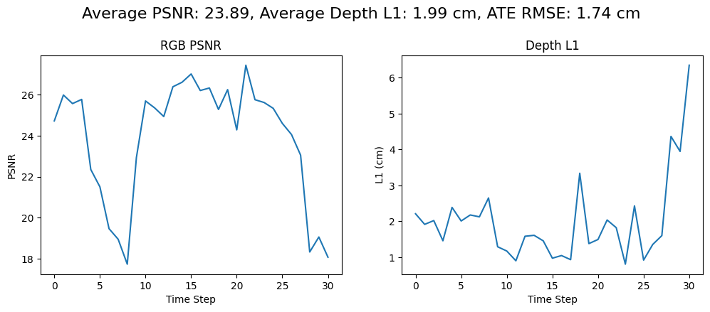

Введение
3D-гауссовы сплаттинги (3DGS) стали популярным представлением для фотореалистичного рендеринга благодаря высокой скорости оптимизации и качества. В задачах SLAM это представление позволяет одновременно строить карту и оценивать положение камеры с высоким качеством. Два современных метода — SplaTAM (Keetha et al., CVPR 2024) и Gaussian-SLAM (Yugay et al., 2023) — демонстрируют разные подходы: SplaTAM использует глобальную карту и достигает отличного качества на небольших сценах, но не масштабируется; Gaussian-SLAM вводит подкарты (submaps), что обеспечивает масштабируемость ценой потери глобальной согласованности и накопления дрейфа.
Идея моей работы заключается в следующем:
- Провести анализ архитектур SplaTAM и Gaussian-SLAM, выявить их сильные и слабые стороны.
- Реализовать гибридную систему, объединяющую лучшие качества обоих методов — добавить поддержку подкарт в SplaTAM, сохранив его механизмы трекинга и маппинга.
- Экспериментально оценить полученную систему на реальных данных, количественно измерить потери в качестве и на основе анализа результатов наметить пути дальнейшего улучшения, направленные на восстановление глобальной согласованности.
Анализ SplaTAM и Gaussian-SLAM
| Критерий | SplaTAM (Keetha et al., CVPR 2024) | Gaussian-SLAM (Yugay et al., 2023) |
|---|---|---|
| Тип карты | Глобальная (единый набор гауссианов) | Подкарты (независимые блоки) |
| Форма гауссианов | Изотропные (сферические) | Анизотропные (эллипсоиды) с регуляризацией |
| Преимущества |
|
|
| Недостатки |
|
|
| Ключевая метрика (PSNR на TUM) | 23.89 дБ (наши эксперименты) | ~22.8 дБ (оригинальная статья) |
Ключевой компромисс
Сравнение двух подходов выявляет фундаментальную дилемму: глобальная согласованность SplaTAM против масштабируемости Gaussian-SLAM.
Анализ: почему подкарты нарушают целостность карты
Под глобальной согласованностью карты понимается её свойство быть единым непротиворечивым представлением сцены:
- все объекты находятся в одной системе координат;
- геометрия не содержит разрывов, дубликатов или «призрачных» поверхностей;
- цвета и текстуры плавно переходят между соседними областями;
- при повторном прохождении одного и того же места карта не «разъезжается».
В методах с глобальной картой (например, SplaTAM) согласованность достигается естественным образом: все ключевые кадры участвуют в единой оптимизации, поэтому и геометрия, и позы камеры подстраиваются друг под друга глобально.
При использовании подкарт каждая из них оптимизируется независимо. Это даёт масштабируемость, но порождает три класса проблем:
1. Разрывы на стыках
Гауссианы из разных подкарт «не видят» друг друга. На границе могут возникать щели или, наоборот, наложения геометрии, что проявляется как артефакты при рендеринге.
2. Дрейф траектории
Ошибки оценки позы внутри каждой подкарты накапливаются. При переходе в новую подкарту ошибка «запоминается», и при возврате в ранее посещённое место карта оказывается сдвинутой (эффект разомкнутой петли).
3. Несогласованность цвета и освещения
Из-за независимой оптимизации цветовые характеристики гауссианов на стыках могут различаться, создавая видимые полосы или пятна.
Таким образом, переход к подкартам решает проблему масштабирования, но разрушает глобальную целостность карты. Даже идеальный трекинг внутри каждой подкарты не может компенсировать эти эффекты, поскольку они возникают именно из-за отсутствия связей между подкартами.
🔍 Ключевой вывод: подкарты позволяют обрабатывать большие сцены с ограниченной памятью, но приводят к потере глобальной согласованности — карта перестаёт быть единым целым. Это открытая проблема, требующая механизмов выравнивания подкарт.
Моя реализация: подкарты внутри SplaTAM
Для интеграции подкарт в SplaTAM я переработал архитектуру, сохранив базовые механизмы трекинга и маппинга. Все изменения доступны в ветке main моего форка.
1. Класс Submap
Создан класс Submap, который хранит все данные одной подкарты:
- params – параметры гауссианов (положение, цвет, масштаб, непрозрачность);
- variables – служебные переменные для плотностификации и прунинга;
- keyframes – список ключевых кадров подкарты (RGB, глубина, поза);
- first_frame_w2c – поза первого кадра (нужна для оценки перекрытия).
Метод initialize_from_frames() позволяет инициализировать подкарту сразу несколькими кадрами, что критически важно для плавных переходов.
2. Создание подкарт
Новая подкарта создаётся каждые new_submap_every(изменяемый параметр) кадров. При создании в неё включаются:
- последние
overlap_frames(изменяетмый параметр)ключевых кадров из предыдущей подкарты; - текущий кадр.
Такое перекрытие обеспечивает сглаживание геометрии на границах подкарт.
3. Адаптивные итерации для первого кадра подкарты
Первый кадр новой подкарты задаёт начальную геометрию для всей последующей области. Если оптимизировать его недостаточно, ошибки быстро накапливаются и приводят к заметным артефактам. Поэтому я увеличил число итераций маппинга для первого кадра новой подкарты до 200 (против 30 для обычных кадров). Это позволяет новым гауссианам точнее вписаться в сцену, снижая риск появления разрывов на стыке.
4. Глобальная пост‑оптимизация после объединения подкарт
Даже с перекрытием и адаптивными итерациями независимая оптимизация подкарт оставляет нестыковки на границах. Чтобы их смягчить, после обработки всех кадров я объединяю все подкарты в единую карту и выполняю 300 дополнительных итераций оптимизации, используя все ключевые кадры из всех подкарт. Этот этап позволяет глобально согласовать геометрию и цвета, уменьшая видимые разрывы и повышая метрики (PSNR, Depth L1).
Результаты экспериментов (TUM RGB-D fr1/desk, 150 кадров)

| Метод | PSNR ↑ (дБ) | Depth L1 ↓ (см) | ATE RMSE ↓ (см) |
|---|---|---|---|
| Оригинальный SplaTAM (глобальная карта) | 23.89 | 1.99 | 1.74 |
| Моя реализация (подкарты + overlap + пост‑опт.) | 15.45 | 6.03 | 1.70 |
🔎 Интерпретация
- ATE остался на прежнем уровне — трекинг устойчив к изменениям карты, frame‑to‑model работает корректно.
- PSNR упал на 8.44 дБ — прямое следствие независимой оптимизации подкарт. На стыках возникают артефакты (разрывы, дублирование геометрии).
- Ошибка глубины выросла втрое — подтверждает, что геометрия на границах подкарт несогласованна.
- Перекрытие 5 кадров недостаточно — при быстрых движениях общая область мала, стык остаётся резким.
Вывод: подкарты действительно позволяют масштабироваться, но разрушают глобальную согласованность карты даже при сохранении точного трекинга. Это открытая проблема, требующая решения.
💡 Гипотеза: выравнивание подкарт через loop closure
Я предполагаю, что глобальную согласованность можно восстановить, добавив в систему обнаружение петель (loop closure) и регистрацию подкарт, используя тот же дифференцируемый рендеринг гауссианов.
🔍 Ключевая проблема и обоснование гипотезы
Проблема: подкарты обеспечивают масштабируемость, но разрушают глобальную целостность карты. Независимая оптимизация каждой подкарты приводит к:
- геометрическим разрывам на стыках — гауссианы из разных подкарт не согласованы, поэтому при рендеринге возникают артефакты (дыры, наложения);
- дрейфу траектории — ошибки позы накапливаются, и при возврате в ранее посещённое место карта «разъезжается» (эффект незамкнутой петли);
- несогласованности цвета и освещения — цвета гауссианов на стыках могут отличаться, создавая видимые полосы.
Эти явления подтверждены экспериментально: при одинаковой точности трекинга (ATE не изменился) качество рендеринга (PSNR) упало на 8 дБ, а ошибка глубины выросла втрое.
💡 Почему loop closure может решить проблему?
В классических SLAM-системах (ORB-SLAM) обнаружение и закрытие петель используется для глобальной коррекции траектории и карты. Идея заключается в том, чтобы при возврате в уже посещённое место найти соответствия между текущими наблюдениями и ранее построенной картой, вычислить поправку позы и затем распространить её на всю карту (через оптимизацию графа или деформацию).
В контексте гауссовых сплаттингов мы можем применить аналогичный подход, но с использованием дифференцируемого рендеринга вместо классических признаков или ICP. Это даёт ряд преимуществ:
- Гауссианы уже содержат полную информацию о геометрии и цвете, поэтому регистрацию можно выполнять непосредственно по рендеру, что использует сильные стороны представления.
- Рендеринг дифференцируем — значит, мы можем минимизировать ошибку между рендером текущего кадра и рендером из подкарты-кандидата, оптимизируя относительную позу градиентным спуском.
- Такая регистрация не требует выделения дополнительных признаков и работает даже на слабо текстурированных поверхностях (благодаря глубине).
После того как для каждой обнаруженной петли вычислена относительная поза, строится граф, узлы которого — подкарты, а рёбра — относительные преобразования (одометрия и найденные петли). Оптимизация этого графа (например, с помощью g2o) даёт глобально согласованные позы всех подкарт. Затем каждая подкарта жёстко трансформируется в соответствии с новой позой, что устраняет разрывы на стыках и дрейф.
✅ Ожидаемый результат
- Разрывы на границах подкарт исчезнут, так как после выравнивания гауссианы из разных подкарт окажутся в единой системе координат.
- Дрейф траектории будет скомпенсирован, ATE перестанет расти при повторном прохождении участков.
- Качество рендеринга (PSNR) приблизится к значениям глобальной карты, поскольку геометрия и цвет станут согласованными.
- Масштабируемость сохранится: подкарты по-прежнему оптимизируются локально, а глобальное выравнивание выполняется лишь эпизодически.
Таким образом, гипотеза опирается на успешный опыт классических SLAM и на свойства дифференцируемого рендеринга, а полученные экспериментальные данные чётко указывают на наличие проблемы, которую этот подход призван решить.
Заключение
В ходе работы я реализовал гибридную систему, объединяющую SplaTAM и подкарты. Эксперименты показали, что предложенные модификации сохраняют точность трекинга (ATE не изменился), но приводят к существенному падению качества рендеринга (PSNR ↓8.44 дБ) и геометрии (Depth L1 ↑4.04 см). Это количественно подтверждает открытую проблему: подкарты масштабируются, но разрушают глобальную согласованность.
На основе анализа современной литературы я сформулировал гипотезу: добавление loop closure через регистрацию подкарт дифференцируемым рендерингом может устранить дрейф и восстановить качество. План дальнейших действий включает увеличение перекрытия, реализацию детектора петель и оптимизацию графа поз.
Работа не завершена, но она чётко очерчивает направление для достижения одновременно масштабируемости и глобальной согласованности.
Литература
- Kerbl, B. et al. “3D Gaussian Splatting for Real-Time Radiance Field Rendering.” SIGGRAPH 2023.
- Keetha, N. et al. “SplaTAM: Splat, Track & Map 3D Gaussians for Dense RGB-D SLAM.” CVPR 2024.
- Yugay, V. et al. “Gaussian-SLAM: Photo-realistic Dense SLAM with Gaussian Splatting.” arXiv 2023.
- Sandström, E. et al. “LoopSplat: Improving 3D Gaussian Splatting SLAM with Submap Loops.” under review 2025.